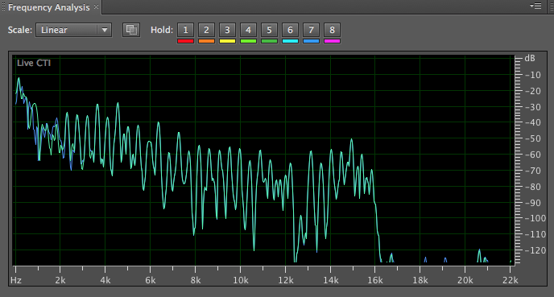
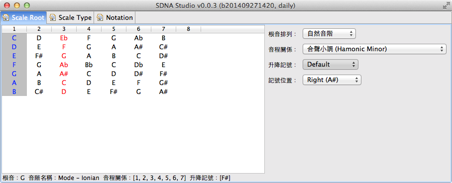
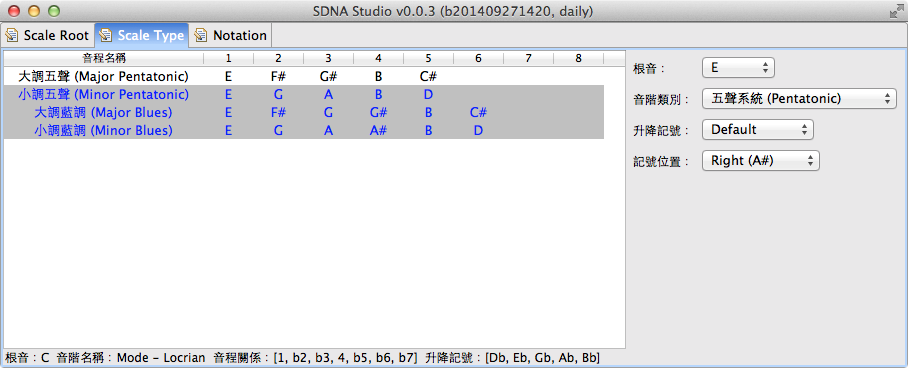

概述『和聲分析』演算法
發布日期：2014-09-27
下面這段影片介紹了一個分析和弦的工具，跟『科技與音樂』一文介紹的東西其實是類似的技術。
我曾經寫過一個小程式，目的是用來歌曲分析，當時也有做過類似的事情。最近也有朋友問我想關的問題，我把當時寫『和弦分析』程式的一些方法記錄下來給有興趣的人參考。
這個程式的主要目的用來幫忙找歌曲的調性跟和弦，雖然是描述一個『程式』，不過音樂上的思考過程，基本上還是要具備基礎的樂理知識，反而不會提到太多的程式設計的概念。
這段文字除了是在描述程式設計的和聲分析方法，其實也是在描述一般樂手『採譜』的基本概念。
要寫這種工具，要做幾件事情，分兩個部分：音頻分析 和 和聲分析。本文著重的描述是第二個部分，第一部分偏向數位訊號處理 (DSP) 應用。
和聲分析我是假設用 MIDI SMF (Standard MIDI Files) 當作輸入，而不是 Digital Audio (像是 MP3、WAVE)，如此可以省去音頻分析部分。步驟如下：
一、建立基本定義資料庫
- 定義音名 Notation 以及表示法 (Expression)，像是 CDEFGAB 以及八度音表示法、升降記號，像是 A1、C6、C#3 … 等，這邊的數字表示第幾個八度音。
- 音程關係 Interval、數字系統 (Numbered)
- 調性定義：大調音階、小調音階、其他音階的音程關係，就是音階基礎描述的東西。
- 和弦屬性：大和弦、小和弦、增和弦、減和弦、七和弦系列、延伸和弦 … 等。大概就是和弦基礎描述的東西。
- 順階和弦與和弦功能：順階和弦的運算函式、定義主和弦、下屬和弦、屬和弦
二、和弦辨識函式
在這之前，必須具備的條件就是，已經知道歌曲的速度、小節數、每個小節裡用到哪一些音符，但是不知道和弦、調性等。這部分都是屬於音頻分析的範疇。
在步驟一描述的，都是定義，也就是分析前需要知道的，根據音頻分析的結果，知道音符的定義名稱，像是：第五小節有音符 A4、C3、D4 等音符，這些音符個別有自己的音符長度 (Duration)、甚至是分析出強弱 (Velocity、CC#7)、各種演奏表情 (Expressions)。所以最方便的方法，就是直接用 MIDI 的 SMF (Standard MIDI Files) 分析。
基本的功能就是：輸入一堆音名，找出『可能的』和弦名稱，基本的步驟如下：
- 把這些音符全部放在一個八度音之內，找出他們的音程關係。例如找到一堆音符是：A3 C
- 根據上一步驟找出根音、三度音、五度音，影片中 (00:15) 顯示百分比大概就是這段。 實際上編曲越複雜的歌曲，所輸入的音符往往會超過一般和弦的定義，也就是, 我們聽到一小節裡面，同時會包含旋律 + 和弦 + 其他經過音/插音 (ex: 弦樂), 或者節奏樂器的噪音。如果分析的歌曲對象是單一樂器獨奏，則準確性則會高很多。
- 根據上一步驟的結果，判定和弦屬性是：大和弦、小和弦、減和弦、or 增和弦
- 找出七度音 (如果有的話), 再根據 (2.2) 的結果, 判定七和弦屬性.
- 找出其他的延伸音 Tension Notes or 4th, 6th.
三、調性與順階和弦分析
在 (二) 已經找出了所有的和弦名稱、和弦屬性，接下來就是要根據這些和弦分析出調性、和弦功能。
- 找出屬和弦，用來定義終止式。結果可能會有多個，如果兩個以上，就可能有用到次屬和弦。
- 根據前步驟的結果，往下一小節找一級和弦，判斷調性。直到下一個屬和弦，標記調性區間。例如前八小節為 C 大調，後八小結為 F 大調。
- 接續上步驟結果，找出這些區間的其他和弦。標記順階和非順階的和弦。
到這裡，一首歌的輪廓差不多已經出來了。
四、和聲分析
(三) 的結果取得調性、順階和弦，接下來分析的就多了：
- 分析 Bass Line
- 分析調外和弦 (Outside)
- 分析延伸和弦、Tension Notes
- 分析次屬和弦
- 分析和弦進行
- 分析調式音階
這段也是最複雜的，要知道很多和聲理論，特別是 Jazz 和聲。
上述的四個步驟姑且可以稱為和弦分析的演算法，不過只是最基本的而已。我當時在寫 『調、調式與轉調』、『關係和弦?』 等文章，其實就是在寫這段分析的 code。
音頻分析
處理的是 Digital Audio Data ，像是 MP3、PCM (Wav)、Aiff 等格式。單一樂器的錄音，辨識度越高，可以做精準的分析；復音的音樂，也就是兩種樂器以上混音的音樂，像是有鼓、鋼琴、吉他等，辨識度越低。
分析重點：節奏、音符，也就是頻率分析，單一樂器可以分析音色、噪音部分。
頻率分析就是根據『樂器音階頻率表』的定義，分析出目前的音是哪一個。不過必須仰賴數學方法來分析，以 CD 音質 44.1 kHz / 16bit 的規格，每秒的資料有 44.1k 筆，在分析上每秒會同時有很多頻率 (如下圖)，要分析出有哪一些音以及他們的比率關係，辨識出音符。

實際上辨識出『什麼是一個音』、『一個音的長度』、『同時間是否還有其他音』、『音色』、『表情』是不容易的，大部份會用硬體 DSP Chip 處理。軟體處理也是可以，但是 CPU 必須有對應的運算能力。
要做這種軟體，通常都會利用寫濾波器 (Filter) 做過濾，把不需要的部分，像是噪音、高低頻、利用 Compressor 強調重音、弱化噪音等技巧，達到分析『音符』的效果。
節奏部分，第一段其實都沒有提到，因為我是假設這段已經做好了。不過實際上是有難度的。因為要分析出『拍子』在什麼地方，如果是有明顯拍子的音樂，像是爵士鼓，還可以依照波型的強度、動態分析拍點，然後再計算出歌曲的速度。
『音頻分析』是不容易的，特別是複音音樂。
上述的分析，其實在『影像』處理是一樣的概念，現在智慧型手機都有內建一些濾鏡功能，可以動態加強某一些顏色、白平衡、動態、降雜訊等，意義上和這邊提到的濾波器 Filter 是一樣的，同時也都是用 DSP 在運算。
結論
以前很多人會問關於『Wave to MIDI』或者有沒有工具可以『MP3 轉 MIDI』這類的問題。這問題跟用電腦做翻譯是類似的，通常我的答案都是：『不行。有也只能轉單一樂器的，而且結果大多不盡人意。』
這幾年隨著『Big Data』興起，分散式運算以及人工智慧的發展，這類分析應用越來越可行，這幾年常見的像是 iPhone 上的 Siri、Facebook 的人臉辨識、指紋辨識、Google 的翻譯 … 等。人工智慧越來越成熟、運算能力越來越強大，未來或許能夠將 MP3 分析的精準，然後產生出很漂亮的 MIDI。
不過對於一個樂手、音樂家而言，耳朵和腦袋，才是最強的分析工具。這些東西目前為止都還是輔助性質的。
後記：朋友介紹一個日本人寫的工具 “Wave Tone” 可以做歌曲的分析，大概使用後，對於現在 “音頻分析” 技術的成熟，有很大的改觀。以前可能不容易做到，現在已經不難做到了。
關於
關於我寫得小程式，其實後來沒完成，大概只做出一個工具而已。就是可以計算各種音階，取得音符的資訊。我沒有打包成執行檔，放在 github 有興趣可以參考。截一些圖如下：





延伸閱讀
站內文章
- 音樂科技概論
- 音階基礎
- 和弦基礎
- 關係和弦
- 樂器音階頻率表
- 調、調式與轉調
- 基礎聲學與數位音樂製作
- Digital Audio System
參考資料／延伸閱讀 (站外)
- MIDI Standard Files
- CD Digital Audio (Wiki)
- 什麼是 FM 合成技術？
更新紀錄
- 原文位址：https://rickmidi.blogspot.com/2014/09/blog-post_27.html
- 2014/09/27: 初版